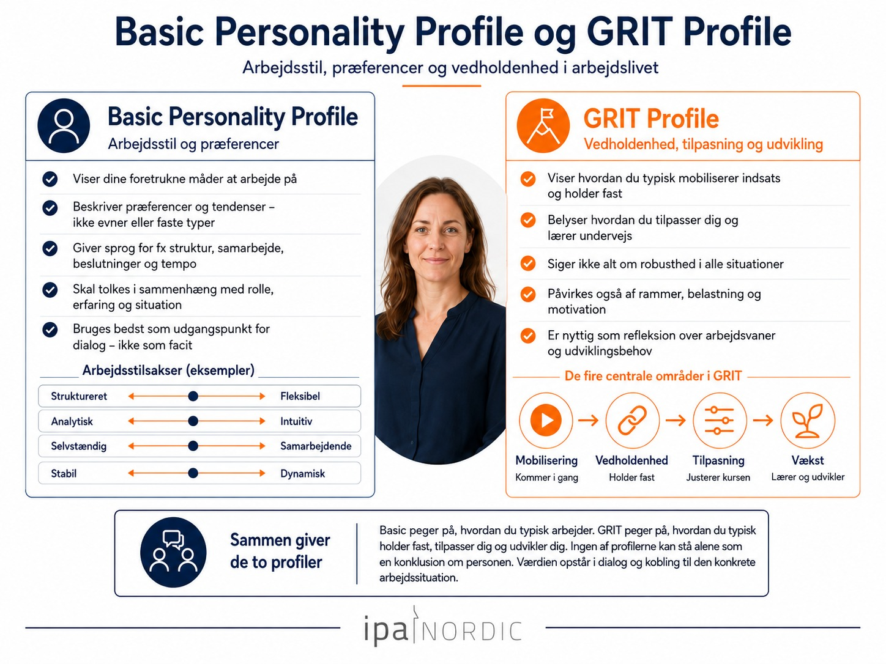
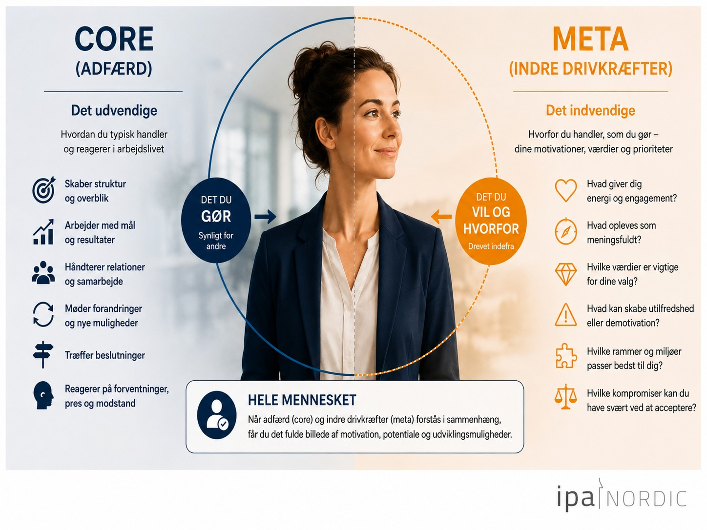
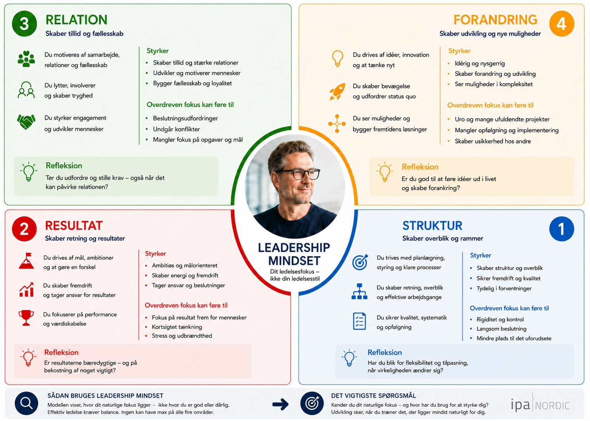

Bedre samtaler begynder med bedre indsigt
Jeg anvender IPA-analyser som et praksisnært grundlag for dialog om arbejdsstil, motivation, ledelse og udvikling. Analyserne står ikke alene som en konklusion om et menneske — værdien opstår, når resultaterne kobles til rolle, erfaring, situation og de konkrete udfordringer i virksomheden.

Basic Personality Profile & GRIT Profile
Basic Personality Profile beskriver personens foretrukne arbejdsstil. GRIT Profile undersøger, hvordan personen mobiliserer energi, fastholder indsatsen, tilpasser sig og skaber udvikling, når arbejdet kræver vedholdenhed og forandring.

Core Personality Profile & Meta Profile
Core Personality Profile beskriver den arbejdsrelaterede adfærd og personens præferencer. Meta Profile går et lag dybere og undersøger motivation, værdier og indre drivkræfter.
Meta Profile er ikke en selvstændig analyse. Den bygger altid oven på en gennemført Core Personality Profile.

Leadership Mindset
Leadership Mindset undersøger, hvordan en person forstår og udøver ledelse.
Leadership Mindset er ikke en test af, om man er en god eller dårlig leder. Analysen viser, hvilke ledelsesperspektiver personen typisk lægger mest vægt på.
Hvad kan analyserne bruges til?
En del af PeopleSuite Netværket
MFG Advisory arbejder med IPA-analyser og PeopleSuite-løsninger som en del af PeopleSuite Netværket — et fagligt netværk omkring IPA-analyser, PeopleSuite, HR-værktøjer, faglig sparring og fælles synlighed. MFG Advisory driver fortsat egen virksomhed, egne kunder og egne ydelser.
Læs mere hos IPA Nordic ↗Associeret samarbejdspartner med Strategisk HR
MFG Advisory indgår i det faglige netværk omkring PeopleSuite, IPA-analyser og Strategisk HR.
Læs mere om Strategisk HR ↗